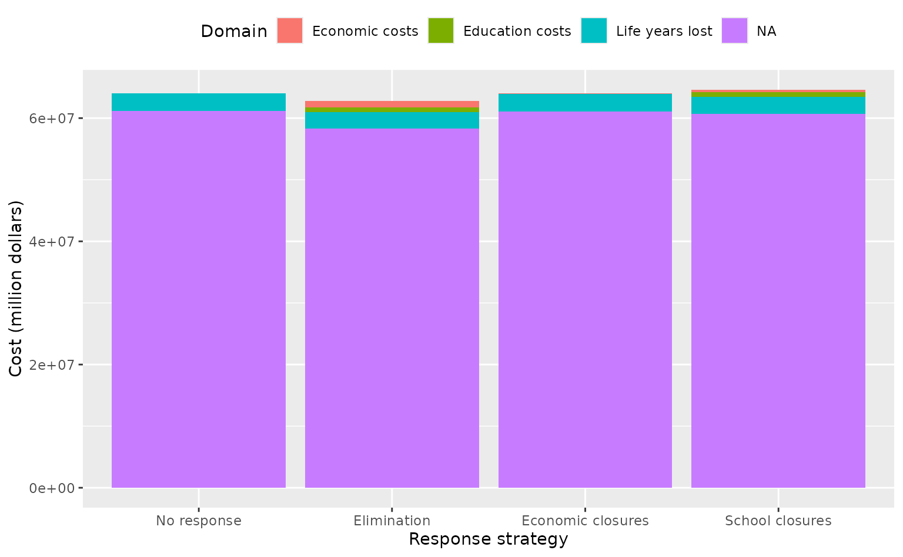

This vignette show how to use daedalus to calculate and compare the health, social, and economic costs of a pandemic for different response scenarios.
We can run the DAEDALUS model for different response scenarios and quickly extract the costs for each scenario.
For this example, we choose to model an outbreak of 1918 influenza in the United Kingdom.
# get response scenario names
response_scenarios <- c(
"none", "elimination", "economic_closures", "school_closures"
)
names(response_scenarios) <- response_scenarios
# model the epiemic with different response strategies
output_list <- lapply(
response_scenarios, daedalus,
country = "United Kingdom",
infection = "influenza_1918"
)Obtaining the health, economic, and social (here, educational) costs,
all converted to cost measures that can be expressed in dollars, only
requires output to be passed to the function
get_costs().
# calculate costs
cost_list <- lapply(output_list, get_costs, summarise_as = "domain")We can transform the data into a wide data.frame and plot the costs for each response strategy.
costs <- as.data.frame(cost_list)
setDT(costs, keep.rownames = "domain")
costs <- melt(
costs,
id.vars = "domain",
variable.name = "response_strategy",
value.name = "cost"
)